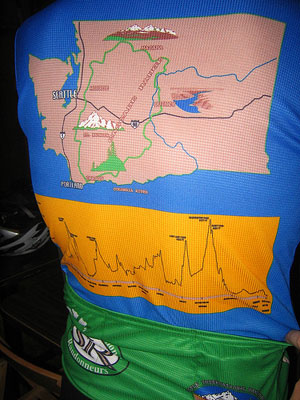

Volume 10 Issue 8 - November 2005
Ride Summary: Mountain 100k
Meeting Report: SIR's Annual Meeting
Survey Report: Results of SIR's Membership Survey
NOTE: Please send any content for the newsletter to Patrick Gray
- Volunteers Needed: SIR is still looking for volunteers to help with Publicity and Outreach and to organize the Spring 400k! Contact Mark Thomas.
- Winter Rides: Terry Zmrhal is once again organizing the famous Terry Z's Winter Training Ride Series. Details are on the SIR web site.
- Ride Narratives Sought: The SIR newsletter is always looking for ride narratives, commentary and other cycling stories to publish. Ideally we'll have a story from each brevet. We're still missing a piece on the Summer 600k or the Mountain 100k. Contact Patrick Gray if you have something to share. Don't be shy.
Jan Heine
For the most part, the Mtn. 100k Populaire was a great success. The weather was nice, southerly winds meant tailwinds on the exposed stretches, but no headwinds (going south, we were sheltered). Almost everybody enjoyed the ride. New records were set for participants, finishers and fastest finish time (if one discounts the very first Mountain 100k over a course that was shorter and less hilly). A lot of non-members and new faces showed up, and many expressed interest in our other events. Even the weather held, the rain starting only after the last finisher made it to the top of Mt. Olympus Drive.Here are the stats:
47 starters
37 finishers
10 DNF
2 accidents
no penaltiesUnfortunately, the event was marred by two accidents. One relatively minor, involving a solitary fall on Cougar Mountain and some road rash. The rider finished the event.
The second accident was more serious. Martha Walsh, a very experienced rider and racer, was riding with a group of racers who had entered the brevet. In the May Valley, they got off course (racers usually take a shorter route to Tiger and go up the steeper side, and they are not used to navigating). Riding in a group, a rider barely skimmed a large pothole, the second rider swerved and Martha was forced into the hole and crashed. She broke her jaw and was carried away in an ambulance. She remained in the hospital overnight while they figure out how to set her jaw.
These accidents show that while randonneuring generally is a safe sport, we need to think about safety. Both did not involve SIR members, but I have been in similar situations. Obviously, when descending, every rider should remain within the limits of their bike and their capabilities. To get to know these limits, I suggest off-pavement riding and especially cyclocross. There you can learn without undue risks when your bike starts sliding and what it feels like as you approach the limit.
More importantly: When riders follow you in a paceline or in a pack, please give each obstacle, hole, bridge abutment, pole on trail, etc., at least 2 feet of space, more if practicable. Think about the riders behind you. Each may be a few inches offset from your wheel, and the last one may hit the obstacle that you just passed with 2 inches to spare!
When riding in a group, take the lane if at all practicable. If you lead the group, ride in the center of the lane (or shoulder) to give the riders behind options where to ride. (I once fell into the ditch because our group was riding so close to the edge that in a place where the asphalt had broken off, I simply fell off the road.) Riding in the center of the lane also helps drafting in slight crosswinds.
Having known Martha for many years - I rode RAMROD in 1998 with her and her husband Mick - I am very upset by her accident.
Finally, because of the large number of participants (I ran out of control cards, having planned only for an increase of 50% over last year), not everybody signed in on the sign-in sheet. (It was a bit chaotic at the start.) Because I don't have the names of all DNFs, I will not report any DNFs in the official results. I even suggest this for future populaires - I see no need to publish non-SIR members' names if they don't finish an event for some reason.
Patrick Gray
On October 15th about 50 Seattle International Randonneurs riders, volunteers and fans packed into the back area of the Celtic Bayou alehouse in Redmond for SIR's annual meeting. After a period of socializing, beer drinking and lies about how well we each rode this year, Mark Thomas got down to the business of reporting on SIR's activities over the past year, plans for next year and the recruitment of volunteers.
Mark Thomas Reports on 2005 Activities While Images from the Cascade 1200 Appear on the TV Overhead
Photo: Tim CorkeryIn 2005 SIR organized 14 events totaling 4,860 kilometer. During the season 225 different riders completed 606 events and 75 different people volunteered their time to make the events possible. All told, riders on SIR events pedaled 215,720 kilometers - equivalent to 5.4 times around the earth or halfway to moon.
2005 Brevet Finishers
Distance Finishers 100k 176 200k 129 300k 88 400k 71 600k 48 Six teams completed the Flèche Northwest in April this year and the 26 total finishers made it the biggest fleche in the United States, again.
SIR represents a huge part of randonneuring in the U.S. More than 10% of RUSA members, RUSA points, and completed rides are contributed by SIR. We've earned 1,164 ACP points - the highest in the U.S. and a 20% increase over our 2004 number. We've also earned 2,176 RUSA points - also the highest in the U.S. with the next club registering 1,412 points.
"Things to do" T-shirts were presented to David Huelsbeck, Peter Beeson and Mark Thomas for completing every single brevet put on by SIR in 2005. These guys don't just show up and ride, they also contribute to the club by organizing brevets, writing articles for the newsletter and working to improve the club for all riders.
The inaugural Cascade 1200 was a great success for SIR. There were 61 riders who completed the 1,200k distance and seven completed the 1,000k distance. Mark noted that the 84% finish rate was very good considering the extremely challenging course. Of course the event wouldn't have been nearly as good without the efforts of the 44 volunteers who worked so well to make SIR look good. Here's a list of those volunteers:
Allison Bailey, Amy Pieper, Ann Jensen, Bill Dussler, Brad Hawkins, Chris Thomas, Dan Fender, Dan Suomi, Dan Turner, David Barton, Don Funk, Don Smith, Donald Boothby, Duane Wright, Elena Thomas, Gina Suomi, Jasmine Hutchinson, Jodi Coy, Jon Muellner, Joyce Clifford, Kevin Humphreys, Mark Jackson, Mark Thomas, Max Maxon, Melissa Friesen, Michele Jackson, Mike Rasmussen, Mike Richeson, Nancy Nelson, Patrick Gray, Paul Johnson, Paul Whitney, Peg Winczewski, Peter McKay, Philip Thomas, Robin Pieper, Russell Carter, Sheila Walker, Steven Otten, Sue Matthews, Ted Vedera, Terry Zmrhal, Tom Brett, William Roberts.
 A Brand New Cascade 1200 Jersey
Photo: Tim CorkeryMark also thanked those who volunteered to organize and provide support for each of the other 2005 brevets. Those people are:
Spring 100: Tom Lawrence, Mark ThomasMark then turned the floor over to Paul Johnson to discuss the results of SIR's membership survey (full results appear in this issue of the newsletter). Paul said the survey provided excellent feedback on things SIR is doing well now and could improve on in the future. A list of recommendations were made to the board for consideration in 2006 and beyond:
Spring 200: Anita McKay, Bonnie Dussler, Greg Cox, Mark Thomas, Mary Cox
Spring 300: Duane Wright, Eric Vigoren, Karen Burns, Maggie Beeson, Peg Winczewski, Peter Beeson, Ted Vedera
Spring 400: Brad Havens, Cate Mallory, David Huelsbeck, Matt Cary, Sara Shaw
Spring 600: Bill Gobie, Lorene Gobie, Melinda Morrow, Mike Richeson, Owen Richards, Trent Hill
Fleche: Wayne Methner, Amy Pieper, Robin Pieper, Mark Thomas, Bill Dussler
Summer 100: Paul Johnson, Peg Winczewski, Darren Adams, James Gutholm
Summer 200: Peg Winczewski, Brian List, Amy Pieper, John Kramer, Lola Jacobsen, Peg Winczewski, Robin Pieper
Summer 400: Don Harkleroad, Ron Himschoot
Summer 600: Bill Dussler, Frank Cordell, Greg Cox, Mike Haselman, Susan France
Mountain 100: Bill Gobie, Duane Wright, Jan Heine
With the feel-good part of the meeting over, Mark began the business of recruiting volunteers for next year's brevets and SIR activities. That list includes:Publish our ride schedule for posting in area bike shops Tag shorter routes onto the longer brevets Make wool jerseys available for purchase Add a night-start 100k to the calendar Solicit newsletter articles addressing the concerns and challenges from the survey There was also some discussion of moving the newsletter to print-only (with PDF online) for mailing to all SIR members and local bike shops.
Events
Spring 100 km Populaire: Feb 25 - Wayne Methner and Tom Lawrence
Spring 200 km: Mar 11 - Greg Cox
Spring 300 km: Mar 25 - Rick Blacker and Jim Sprague
Flèche Northwest: Apr 7-9 - Wayne Methner
Wenatchee Camp - Apr 28-May 1 - Terry Zmrhal
Spring 400 km: May 13-14 - Volunteer Needed
Spring 600 km: June 3-4 - Duane Wright, Peter Beeson, Eric Vigoren
Cascade 1200km/1000/200 km: June 25-28 - Terry Zmrhal, Peter Beeson, David Huelsbeck
Summer 100 km Populaire: July 8 - Paul Johnson
Summer 200 km: July 22 - Peg Winczewski
Summer 300 km #1: August 5 - Dan Turner
Summer 300 km #2: August 12 - Volunteer Needed
Summer 400/1000 km: August 24-27 - Mark Thomas
Summer 600 km: September 16-17 - Eric Vigoren
Mountain 100km: September 23 - Jan HeineSIR Support
Newsletter - Patrick Gray
Jerseys - Paul Johnson
Land's End - Bill Dussler
Membership Support - Eric Vigoren
Socks - Amy Pieper
Photo Editor - Tom Norwood
Publicity/Outreach - Volunteer Needed
Bike Expo - Paul Johnson
Permanents - Mark Roehrig
Route Archiving - Eric Vigoren
Terry Zmrhal described the initial plans for Northwest Crank, a four-day bicycling festival in Wenatchee. Northwest Crank will include presentations, daily rides (including a 200k), a banquet and awards ceremony. More information can be found on SIR's Website.
The Cascade 1200 Commemorative Cake
Photo: Tim CorkeryJan Heine brought copies of his book, "The Golden Age of Handbuilt Bicycles" for people to see and purchase.
Paul Johnson handed out Cascade 1200 jerseys to those who had ordered them.
Amy Pieper provided an update on the ordering of SIR wool socks. The socks are in production and with a bit of luck will be available in December. Updates and ordering information will appear on the SIR web site.
Finally the meeting got down to real business with the election of board members and officers. Any possible dissent must have been squashed before the meeting as everyone was re-elected in a unanimous fashion.
RBA - Mark ThomasWith that we adjourned to eat the lovely Cascade 1200 cake, continue swapping stories of rides past and, for many, begin the bike ride back home.
Webmaster - Jon Muellner
Treasurer - Terry Zmrhal
Board - Paul Johnson, Peg Winczewski, Peter McKay, Amy Pieper, Peter Beeson, Wayne Methner
Outside Celtic Bayou Riders Prepare to Head Home
Photo: Tim Corkery
Patrick Gray
Overview
SIR's first-ever membership survey was conducted October 5-20, 2005. The purpose of the survey was to gather feedback on SIR (and randonneuring in general) and thereby improve the organization and the events we offer, to expand our membership and to retain current members.The survey was announced through the SIR Website, the SIR newsletter, the SIR listserve mailing list and a direct e-mail to SIR members not already subscribed to the listserve.
Number of Completed Surveys
74 (69 male, 5 female). SIR's membership at the time of the survey hovered around 140.Bike Ownership
A mere 9% of respondents own only one bike, 57% of respondents own between two and four bikes. One person owns 20 bikes, but it's not known if they all get ridden.Years of Randonneuring Experience
64% of respondents have been randonneuring for three or fewer years and 27% have been randonneuring for only one year. Six people have been randonneuring for more than 10 years.How People Got Involved with SIR
Friend dragged me along - 28%
Read about SIR on their web site - 34%
Heard about randonneuring through another club - 18%
Saw flier/article about SIR - 1%
Other - 34%
Some of the ‘others' included four people who encountered SIR members out on the road.
Three people mentioned Kent Peterson or his web site.
One person mentioned Jan Heine's articles in the Rivendell Reader.
Internet sites that were mentioned included bicycling.com, bikelist.org and blogs.Long Distance Experience Prior to Joining SIR
Nothing longer than a century - 16%
A couple of centuries/organized rides - 39%
Bike touring - 28%
Lots of long-distance riding - 28%
Regular commuting by bicycle - 35%
Racing - 9%
Other - 20%
Of the ‘others' there were a couple of mentions of STP and RAMROD.Cycling Events Other than SIR Brevets
Brevets sponsored by other randonneuring clubs - 40%
Organized centuries/double centuries - 52%
Charity rides - 19%
Flagship rides (STP, RAMROD, RAGBRAI, etc.) - 47%
Other club rides - 45%
Self-organized/solo long-distance rides - 70%
Endurance races (Furnace Creek, Fireweed, RAAM, etc.) - 4%
Other - 7%Goal Setting
62% indicated they set specific goals for the cycling season. Some of those goals included:
Mileage and speed targets
Randonneuring awards including Super Randonneur, R3000 and R5000.
Specific rides
Fitness
Enjoyment
PBP
Completing a 1000k or 1200k
Many people have the goal of completing a full brevet seriesRandonneuring Concerns
Personal safety - 48% listed this as their greatest concern
Making the distance - 35% listed this as their #2 concern and 26% listed it at #1
Getting lost - 5% listed this as their greatest concern, 45% ranked this as their lowest concern
Mechanical failure - 38% ranked this as their second lowest concern, 9% listed it as their greatest concern.
Injury or fatigue - 34% ranked this as their middle concern while 29% ranked it as their second highest concern.The average rankings are as follows, ranked greatest to least:
Personal Safety, Making the Distance, Injury or Fatigue, Mechanical Failure, Getting LostRandonneuring Rewards (scale of 1/low to 6/high)
Excuse to tinker with bike - a whopping 62% ranked this as their lowest reward and no one ranked it as their highest reward.
Meeting the challenge - 52% listed this as their greatest reward.
Seeing the countryside - 31% rated this at #4, no one listed it at zero.
Time away - 30% rated this at #2.
Camaraderie - 48% ranked this right in the middle with a 3 or 4.
Keeping in shape - 31% ranked this at #5.The average rankings are as follows, greatest to least:
Meeting the Challenge, Keeping in Shape, Seeing the Countryside, Camaraderie, Time Away, Excuse to Tinker with BikeHardest Things to Overcome
This was an open-response question. Some consistent themes included:Learning how/what/when to eat and drink (14% of responses) Riding at night Rain Chipseal Being slow/riding alone Staying motivated on long rides Aches and pains - butt, feet, neck, knees, other injuries Heat Cold Early start times Pacing (not going too fast at the start) Lack of understanding from friends and/or family Off-season training Finding adequate time to train Hills Fatigue and mental impact And this gem, "The final climb of the 3v300k" Sources of Randonneuring Information
Respondents were asked to rate the following sources of information:SIR web site, including newsletter - 47% pretty good, 42% great
RUSA web site - 35% fine, 29% pretty good, 14% great
RUSA newsletter - 35% fine, 49% pretty good, 8% great
Direct wisdom from other SIR members - 30% pretty good, 58% greatInformation Sought from the Sources Above
This was an open-response question. Some consistent themes included:Nutrition/hydration Navigation Gear/equipment reviews Training methods Ride stories and experiences How to survive long rides Event schedules/logistics/information (including routes and elevation profiles) Permanents information Rules Recovering from injury SIR Brevet Organization
100% of respondents said they though SIR brevets were well organized Additional comments included:Well laid out; extraordinary volunteers; challenging courses. Exceeds my expectations. The high level of organization is one of the things that keep me coming back. Ride organizers do an excellent job describing the route before each ride. There is excellent support on the longer rides (400 km & 600 km), like bag drops, sleeping accommodations and support at the controls. The few I've done with other clubs make SIR seem very organized and well supported. SIR rides are the best I've done. I think the SIR brevets are superbly organized. The organization and planning is always immaculate. Excellent. Among the best anywhere. But despite those glowing comments, there were also some criticisms of route choices (dangerous roads, odd navigation, neutral roll-outs) and cue sheet formatting, as well as this comment:The gap between new and experienced randonneurs is intimidating. Aspects of Randonneuring that Are Most Enjoyable
This was an open-response question. Many people mentioned the camaraderie they experience, the friendliness of the riders, the enjoyment that comes from the challenge without feeling competitive, and seeing new parts of the state.
Here are some of the responses:The camaraderie is the best! The cheerfulness of the other riders. Sharing miseries with others. Nothing like riding your bike when you're feeling good. Meeting my fellow bike geeks. The rides. I'm impressed by the level of engagement within the club. Riding new roads, meeting the challenge and the camaraderie. The sense of accomplishment without a competitive feeling, camaraderie I like the people, traveling the countryside, the mountains, the challenge of the distance. Riding with a friendly group of cyclists. Non-competitive atmosphere. Sanity check on how my fitness is improving. Emerging from a brevet in good spirits. SIR is a concentrated repository of experienced randonneurs who freely share their knowledge. Friends. Seeing great places by bike. Welcoming organization...especially if you volunteer! Folks seem to be really friendly. I like the element of self sufficiency and problem solving, the personal challenge of longer distances is appealing, and the scenery is incredible. Riding all day and then heading into the night with bunch of fellow loonies. There are a variety of riders in SIR...some as slow as or slower than me! Overcoming huge physical challenges, riding with others who are GOOD cyclists, regardless of their speed. Meeting other riders and seeing new parts of the beautiful region in which we live and ride. Knowing that even though I may not see anyone, there are others out there in the rain with me. The self-reliance associated with a brevet. However, SIR does put in enough controls and check-points that I do feel that if I got in trouble someone could help me to care, if needed. It's not about racing. Friendly club members who are super encouraging and helpful. Open, supportive comrades who offer good company, encouragement and praise for success. What People Like That the Club is Currently Doing
This was an open-response question. Many people mentioned the two full brevet series and the Cascade 1200. Other responses included:The blue SIR jerseys. They're cooler than any other club or team jersey out there. That's right, cooler. Terry Z's winter training series (several people mentioned these) Maintaining an active web presence. Thinking up new, exciting routes. Reaching out to members, especially new members, is good. Website and mailing list are great. Love the populaires. As a first-time rider, people were very friendly and helpful. The adherence to the randonneuring rules. Permanents I like the mix of routes and branching out into some off-pavement rides. Organizing new rides, growing, and showing concern for the members' input like this survey. What Other Things Should the Club be Doing
This was an open-response question. Many people mentioned a desire for non-riding events, less-challenging routes, more 200s, the option of buying SIR jerseys, and more permanents. Here are some of the responses:More training, workshops, seminars, speakers, etc. Carry wool jerseys, socks, and pants! More social events - perhaps a quarterly evening get together; show and tell on bicycle set up; shared ideas on training during "on" and "off" season. More alternatives to standard brevet - maybe competitive, maybe off-pavement. More off-season official events. Maybe some more events that would bring together the members. Such as an awards banquet or potluck in the park. Encourage more women to participate. On non-PBP years, the first brevet series shouldn't be a hill fest, the first brevet series should be more moderate thus allowing strength to build in new members. Having a hill fest on the first series simply encourages local riders to attend rides in Portland or BC instead. Put on brevets that are a little more "mellow" in terms of terrain challenges. For newcomers and less in-shape people to get their feet wet with distance and riding at night. Place some more emphasis on safety issues. I'd like to see more opportunities for 200's, especially if these would be compatible with the longer rides. For example, the BC club often has 100 and 200k options concurrent with a 300/400/600. Encourage more members to host or help put on a brevet. Female-specific training - addressing female concerns of riding at night/alone/in unfamiliar territory. Workshops on repair and maintenance, more small training rides together, or early season training. I would like to see us ride in other organized club rides as a team or audax style for training and club promotion. Regular informal training rides. A longer winter training series - start the training rides earlier in the season. Maybe a rando-buddy program. I really would like to get a membership card in the mail. Maybe more social gatherings where members who don't ride so much can meet the rest of the club. More accessible membership roster. Have a couple 200s in October & November. Perhaps offer some less brutal ride options, particularly for beginners or for those who'd like to encourage family members to come along. More outreach, both in terms of marketing and in terms of bringing different sorts of riders into the club. "I suffered like a beaten dog for X hours in the rain," is not a good sales pitch for anything, but you read most SIR ride reports and that's the subtext. A series of rides that cater to newcomers and/or people who cannot push quite so hard. Interest in Non-Brevet Events
78% of respondents indicated they'd be interested in non-brevet events. Quite a few respondents indicated they didn't think they lived close enough to Seattle to merit attending non-riding events. Other feedback included:I like the bike camp in Wenatchee idea. Keep it about bikes. I don't think we should get all Kiwanis and become a networking base for the firm handshake set. There should be some riding element. I would be interested in a seminar/pub session from time to time, in which more experienced riders talk about food, their first 1200, etc. I like the idea and would hope that that some would include a facility (web?) for those who could not attend in person. I like the organized after-ride affairs, like in Packwood after the 300k. The Fleche is a darn good time, as is the affair after the 200k in Kent. More gatherings after rides would be nice, but what there is now is excellent. Yes, but only during October through January. The rest of the year is busy enough. Volunteering for SIR Events
When asked about the appeal of volunteering for SIR events, 26% indicated it was very appealing, 63% said it was somewhat appealing and 11% said it was not appealing. Luckily no one indicated that it would be the worst thing imaginable.SIR Fees
66% said SIR fees were very reasonable, 30% said they were reasonable and 4% said they were a bit high.Other Feedback
Respondents were given the option of providing additional comments at the end of the survey. Here are most of those responses:Think SIR is a great club. I just want to see it become even better! Keep up the good work! Great job - it's a joy to be a member of SIR. I'm especially encouraged by the club's commitment to surveying its membership. I love the wool jerseys! I still like the idea of a mentoring program. Perhaps there should be official outreach riders on the populaires - people who are willing to ride sag for example. I'm glad to be a member of SIR. Keep up the good work. Keep it up!!! Thanks for asking! Keep up the good work of the club -- you're doing a great job. This is one of the finest organizations I have ever been involved with. The class of volunteers is amazing! I think that in the long run the club will benefit more from maximizing the diversity of the membership than from maximizing the size of the membership. It's good that we seem to be making the effort to accommodate different kinds of riders. The board in general does a great job. Mark Thomas in particular makes SIR great. The Cascade 1200 was great and so were the other rides. Keep up the good work. Women randonneurs are not "beginners" needing someone to ride with... they just want someone to ride with at night. I'm very pleased with the club, rides and experiences so far. This was my first year randonneuring and I loved it! I'm already planning for next year... Keep up the good work. SIR is a very nice organization. Keeping a humble, somewhat traditional atmosphere is very valuable to me. Thanks SIR volunteers and staff for making each season such a success for so many of us and making it lots of fun! Cheers!! I am interested in a summary of the results of this survey, and the motivation behind doing it. I did a 200 and 300 this year and I'm hooked! The volunteer commitment is impressive. I think we are extremely fortunate to have so many enthusiastic and dedicated members willing to devote their time and talents to the sport. Perhaps if we hear of a member who's planning to move to Utah or Mississippi or Michigan we could train and encourage him to become an RBA in his new home area. I'm staying with SIR! You guys are doing great, keep it up! I'd rather ride than volunteer. However I've enjoyed volunteering especially the positive feedback from the participants. If the brevets are too hard we may have trouble retaining new members. I'm a short termer (only one season) and look forward to lots more. Great that you're doing the survey! Targeted advertising or ride promotion may increase awareness of the club and randonneuring in general. Some Recommendations
Based on the feedback in the survey the following recommendations are being made to the SIR membership:Publish our ride schedule for posting in area bike shops Tag shorter routes onto the longer brevets Make wool jerseys available for purchase Add a night-start 100k to the calendar Solicit newsletter articles addressing the concerns and challenges from the survey Anyone who would like additional information on the survey results is welcome to ask Patrick Gray. I'll do my best to accomodate you.
Paul Johnson, Peg Winczewski, Peter McKay, Amy Pieper, Mark Thomas, Terry Zmrhal, Jon Muellner, Peter Beeson, Wayne Methner
Membership Fee:
$10 - full membership w/e-mail newsletter or
$15 - full membership w/printed newsletter.
Membership Address:
c/o Terry Zmrhal
9531 112th Ave NE
Kirkland, WA 98033
425-828-7818